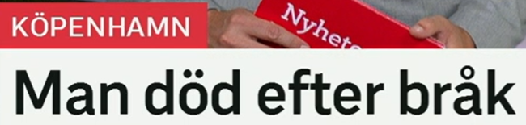
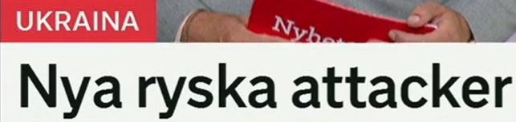
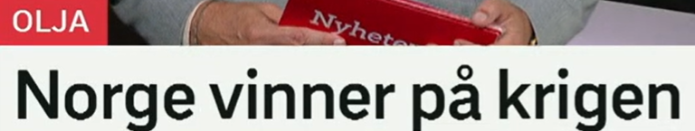
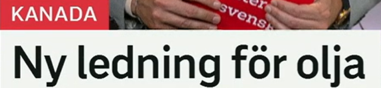
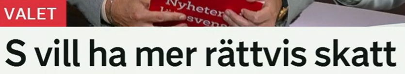
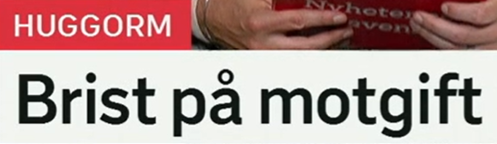

标题总览
Snipaste_2026-07-05_20-23-28.png
Snipaste_2026-07-05_20-23-46.png
Snipaste_2026-07-05_20-24-08.png
Snipaste_2026-07-05_20-25-57.png
Snipaste_2026-07-05_20-26-17.png
Snipaste_2026-07-05_20-26-34.png

Man död efter bråk
一名男子在争执后死亡。
efter 只表明时间先后，不自动等于因果。截图没有说明死亡原因或案件定性。
bråk · ett-名词
词形：ett bråk–bråket–bråk–bråken
含义：争吵、冲突；也可指数学分数
近义：gräl, konflikt, slagsmål
搭配：hamna i bråk, bråk uppstår
efter · 介词
标题义：在……之后
搭配：efter händelsen, efter ett bråk
反义：före
提醒：要表达“因”通常用 av 或 på grund av。
Ett bråk uppstod på gatan. 街上发生争执。
Polisen kom efter händelsen. 警方在事件发生后赶到。

Nya ryska attacker
俄罗斯发动新的袭击 / 新一轮俄方袭击。
无动词名词短语。形容词 ryska 与复数名词 attacker 保持形式一致。
rysk · 形容词
变化：rysk, ryskt, ryska
名词：en ryss 俄罗斯人；Ryssland
搭配：ryska attacker, rysk olja
场景：国籍形容词通常小写。
ny · 形容词
变化：ny, nytt, nya
近义：färsk, ytterligare（新增的）
反义：gammal, tidigare
搭配：nya uppgifter, en ny attack
Nya uppgifter har kommit. 出现了新信息。
Staden utsattes för ytterligare en attack. 该城市又遭到一次袭击。

Norge vinner på krigen
挪威从这些战争中获益。
栏目为“石油”。vinna på 在这里不是赢得战争，而是“从某事获益”；标题没有说明获益方式或规模。
vinna på · 动词短语
词形：vinner–vann–vunnit
含义：从……中获益
近义：tjäna på, gynnas av
反义：förlora på, missgynnas av
krigen · 定复数
词形：ett krig–kriget–krig–krigen
含义：这些 / 那些战争
搭配：krig bryter ut, föra krig
相关：konflikt, fred
Företaget tjänar på högre priser. 公司从更高价格中获益。
Konsumenterna förlorar på förändringen. 消费者因这项变化受损。

Ny ledning för olja
新的输油管道。
ledning 是多义词；与 för olja 搭配时指管道，而非“领导层”。标题没有说明线路、长度或状态。
ledning · en-名词
词形：en ledning–ledningen–ledningar
含义：管线；领导；领先
近义：rörledning（管道）, ledarskap（领导）
搭配：oljeledning, företagsledning
olja · en-名词
词形：en olja–oljan–oljor–oljorna
相关：råolja 原油；oljepris；oljefält
搭配：transportera olja
场景：能源、经济、烹饪，需看语境。
Oljan transporteras genom en ledning. 石油通过管道运输。
Företagets ledning fattade beslutet. 公司管理层作出了决定。

S vill ha mer rättvis skatt
社会民主党希望税收更加公平。
瑞典政治新闻中 S 是 Socialdemokraterna 的常用党派缩写；标题只陈述政策诉求，不含具体方案。
rättvis · 形容词
变化：rättvis, rättvist, rättvisa
比较：mer/mest rättvis
近义：jämlik, skälig
反义：orättvis
skatt · en-名词
词形：en skatt–skatten–skatter–skatterna
搭配：betala/höja/sänka skatt
相关：inkomstskatt, skattesystem
多义：也可表示“宝藏”。
Partiet vill ha ett mer rättvist skattesystem. 该党希望建立更公平的税制。
Hon betalar skatt på inkomsten. 她为收入纳税。

Brist på motgift
解毒剂短缺。
栏目 Huggorm 是“蝰蛇”。标题仅表示解毒剂供应不足，没有给出地区、数量或影响。
brist på
brist：en brist–bristen–brister
近义：underskott, knapphet
反义：överskott, gott om
搭配：brist på läkemedel/personal
motgift · ett-名词
词形：ett motgift–motgiftet–motgifter
构词：mot（对抗）+ gift（毒）
近义：antidot（医学术语）
搭配：få/ge motgift
Det råder brist på motgift. 解毒剂供应短缺。
Patienten fick motgift på sjukhuset. 病人在医院接受了解毒剂治疗。
重点词表与标题表达
| 词汇 | 中文 | 高频搭配 | 近义 / 反义 |
|---|---|---|---|
| bråk | 争执、冲突 | hamna i bråk | gräl, konflikt |
| efter | 在……之后 | efter händelsen | före（反义） |
| ytterligare | 又一、进一步的 | ytterligare en attack | ännu en |
| vinna på | 从……获益 | vinna på förändringen | tjäna på / förlora på |
| krigen | 这些战争 | efter krigen | konflikterna |
| ledning | 管线；领导；领先 | oljeledning; under ledning av | rörledning, ledarskap |
| rättvis | 公平的 | rättvis skatt | jämlik / orättvis |
| skatt | 税 | betala/höja skatt | avgift（费用） |
| brist på | 短缺 | brist på motgift | knapphet / gott om |
| motgift | 解毒剂 | få/ge motgift | antidot |
时间不等于原因
död efter bråk 只说明先后；表达“因……死亡”才用 dö av。
定复数
krigen = 已知的这些战争；attackerna = 这些袭击。
多义词靠搭配
ledning för olja 是管道；företagets ledning 是管理层；ta ledningen 是取得领先。
政治缩写
S、M、SD 等缩写常直接充当标题主语，需要结合瑞典政党语境。
自测
搭配填空
1. Företaget tjänar ___ förändringen.
2. Det råder brist ___ motgift.
3. Hon betalar skatt ___ inkomsten.
答案
1. på 2. på 3. på
翻译练习
1. 公司管理层作出决定。
2. 该政策更加公平。
3. 石油通过管道运输。
参考答案
1. Företagets ledning fattade beslutet.
2. Politiken är mer rättvis.
3. Oljan transporteras genom en ledning.